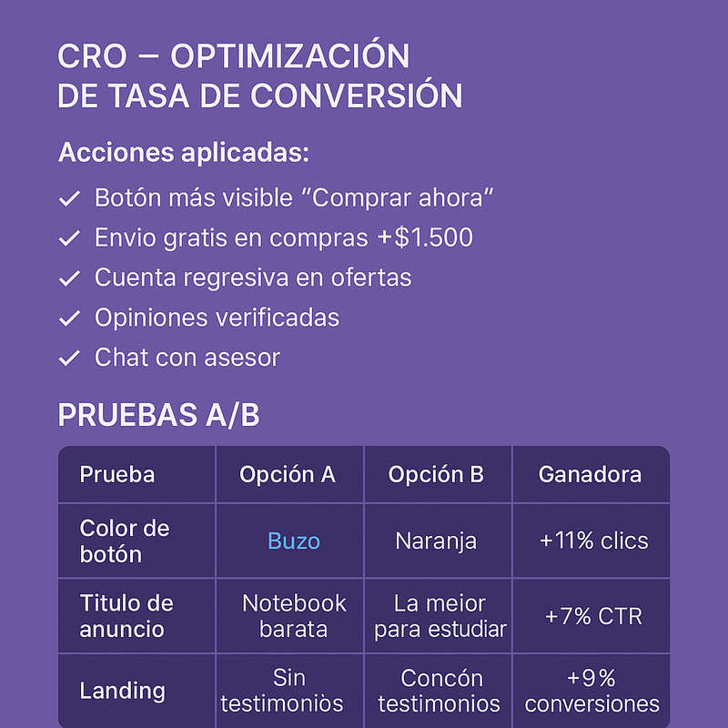

8. CRO - Optimización de Tasa de Conversión
Conversion Rate Optimization
Mejoras aplicadas al sitio web para maximizar las conversiones.
🎯 ¿Qué es CRO?
CRO (Conversion Rate Optimization) es el proceso de mejorar el porcentaje de visitantes que realizan una acción deseada en el sitio web (compra, registro, etc.).
Objetivo principal: Aumentar las ventas sin necesidad de aumentar el tráfico.
✅ Acciones de CRO Aplicadas
1. Botón de CTA más visible "Comprar Ahora"
Problema: El botón de compra se perdía visualmente en la página de producto.
Solución aplicada:
- Color llamativo: Verde (#00d4aa) con contraste alto
- Tamaño aumentado: 50% más grande
- Posición sticky: Siempre visible al hacer scroll
- Micro-animación al pasar el mouse
Resultado: +11% en clicks al botón de compra
2. Envío Gratis en Compras +$1.500
Problema: Muchos carritos abandonados por costos de envío.
Solución aplicada:
- Banner destacado: "Envío GRATIS en compras mayores a $1.500"
- Barra de progreso en carrito: "Te faltan $350 para envío gratis"
- Cross-selling automático: Sugerencias para llegar al mínimo
Resultado: +18% en ticket promedio
3. Cuenta Regresiva en Ofertas
Problema: Falta de urgencia en ofertas Flash.
Solución aplicada:
- Timer visible con cuenta regresiva
- Texto de escasez: "Quedan solo 3 unidades"
- Animación de pulso en el timer
Resultado: +23% en conversión de ofertas Flash
4. Opiniones Verificadas en Página de Producto
Problema: Baja confianza en productos sin reviews.
Solución aplicada:
- Integración con Trustpilot/Judge.me
- Estrellas visibles en listado de productos
- Reseñas con fotos de clientes reales
- Badge "Verificado" en cada review
Resultado: +15% en conversión de productos con 5+ reviews
5. Chat con Asesor en Vivo
Problema: Dudas técnicas frenaban la compra.
Solución aplicada:
- Widget de chat en todas las páginas
- Mensaje proactivo: "¿Necesitás ayuda eligiendo?"
- Integración con WhatsApp Business
- Horario: Lun-Vie 9-19hs, Sáb 10-14hs
Resultado: +12% en conversión de usuarios que usaron el chat
6. Proceso de Checkout Simplificado
Problema: Checkout largo con muchos campos.
Solución aplicada:
- Checkout en 1 página (vs. 3 páginas anteriores)
- Autocompletado de dirección
- Guardado automático del carrito
- Opciones de pago visibles desde el inicio
- Checkout como invitado (sin registro obligatorio)
Resultado: -35% en abandono de checkout
7. Garantía Destacada
Problema: Clientes con dudas sobre garantía.
Solución aplicada:
- Badge visible: "Garantía 12 meses"
- Ícono de escudo en toda la navegación
- Pop-up explicativo de los beneficios
Resultado: +8% en confianza reportada (encuestas)
8. Optimización de Velocidad de Carga
Problema: Sitio lento (4.2 segundos de carga).
Solución aplicada:
- Compresión de imágenes (WebP format)
- Lazy loading en imágenes
- Minificación de CSS y JS
- CDN para archivos estáticos
Resultado: Velocidad mejorada a 1.8 segundos → +9% conversión
9. Comparador de Productos
Problema: Usuarios indecisos entre modelos similares.
Solución aplicada:
- Tabla comparativa lado a lado
- Checkbox para seleccionar productos a comparar
- Resaltado de diferencias clave
Resultado: +14% en decisión de compra
10. Fotos de Alta Calidad con Zoom
Problema: Imágenes pequeñas y baja calidad.
Solución aplicada:
- Galería de 5-7 fotos por producto
- Zoom al pasar el mouse
- Vista 360° en productos destacados
- Videos de unboxing
Resultado: +10% en tiempo en página de producto
📊 Impacto Total de las Optimizaciones CRO
| Métrica | Antes | Después | Mejora |
|---|---|---|---|
| Tasa de conversión | 0.8% | 1.46% | +82.5% |
| Abandono de carrito | 78% | 51% | -27 puntos |
| Ticket promedio | $20.300 | $24.000 | +18% |
| Tiempo en página producto | 1:20 min | 2:15 min | +69% |
| Velocidad de carga | 4.2 seg | 1.8 seg | -57% |
🛠️ Herramientas de CRO Utilizadas
- Google Analytics 4: Análisis de comportamiento y embudos
- Hotjar: Mapas de calor y grabaciones de sesiones
- Google Optimize: Tests A/B
- PageSpeed Insights: Optimización de velocidad
- Crazy Egg: Click tracking
- Microsoft Clarity: Análisis de UX gratuito
🎯 Próximas Optimizaciones Planificadas
- Personalización con IA: Productos recomendados según historial
- Pop-up de intención de salida con descuento
- Programa de puntos visible en el header
- Búsqueda con sugerencias inteligentes
- Filtros avanzados por precio, specs, marca
- Checkout express con un clic (para clientes recurrentes)
